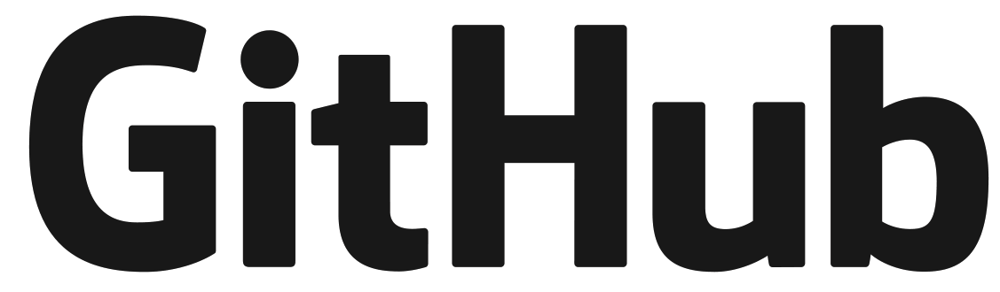

| Home | About me | Projects | Certifications | Portfolio | Resume | Experience | Contact me |
|---|
|
I'm Abhishek Yanamandra |
Since childhood, I was fascinated towards Robotics and AI. Since, Robotics is an interdisciplinery field, I took Electonics in my undergraduation and learned about the software part alongside. As I started learning about the software part I got really interested into Artificial Intelligence and Machine Learning, In order to make my first step towards my goal I started doing courses online and started solving some real life problems with the knowledge I gained through the courses and research papers I read. You can some of my projects I did here.
Inspiration for this Project:
One day, I misplaced my bike keys and had to wait for 1hr to get a duplicate key to again get back home, then I thought of a solution that could enable us to have a key that we'll never misplace, then after getting a bit of inspiration from Apple's TouchID, I decided upon using my fingerprint as the key to unlock the bike.
Working:
Working:
Working:
|  |  |
 |
 |
+918121911114 |